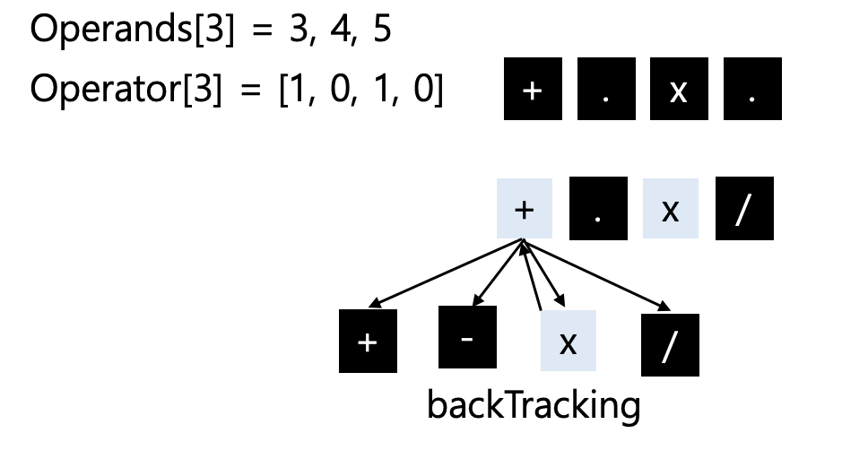

INFO
난이도 : SILVER1
유형 : 백트래킹, 브루트포스
https://www.acmicpc.net/problem/14888
소스코드 : https://github.com/novvvv/PS/blob/main/BOJ/2025/C%2B%2B/14888.cpp
PS/BOJ/2025/C++/14888.cpp at main · novvvv/PS
알고리즘 문제 풀이 코드 모음. Contribute to novvvv/PS development by creating an account on GitHub.
github.com
Solve
문제분석
N개의 수와 N-1개의 연산자가 주어졌을 때, 만들 수 있는 식의 결과가 최대인 것과 최소인 것을 구하는 프로그램을 작성.
예시로 6개의 수와 5개의 연산자 (+ 2개, - 1개, x 1개, / 1개) 가 주어졌다고 가정 시 같은 연산자는 구분할 필요가 없기에 5C2 * 3C1 * 2C1 * 1C1 = 60가지의 식이 생성된다.
변수 정의
operands[11] : 수를 저장할 배열
operators[4] : 연산자의 수를 저장할 배열 (+, -, * , %)
int n;
int operands[11];
int operators[4]; // +, - , * , %
int min_num = 1000000001;
int max_num = -1000000001;
입력
int main() {
// ...
cin >> n;
for (int i = 0; i < n; i++) {
cin >> operands[i];
}
for (int i = 0; i < 4; i++) {
cin >> operators[i];
}
back_track(operands[0], 1);
// ...
return 0;
}
메인 로직
연산자 배열 operators[i]을 브루트포스 방식으로 순회하며, res 변수에 현재 값을 더해간다. 여기서 Idx는 operands 수의 인덱스를 의미한다.

최대 깊이에 도달해 연산자를 모두 사용했다면 연산자의 수를 복구시키는 백트래킹 알고리즘을 사용한다.
void back_track(int res, int idx) {
// base condition : 식 완성
if (idx == n) {
if (res > max_num) max_num = res;
if (res < min_num) min_num = res;
return;
}
for (int i = 0; i < 4; i++) {
if (operators[i] > 0) {
operators[i]--; // 연산자 사용
if (i == 0) back_track(res + operands[idx], idx + 1); // +
else if (i == 1) back_track(res - operands[idx], idx + 1); // -
else if (i == 2) back_track(res * operands[idx], idx + 1); // *
else back_track(res / operands[idx], idx + 1); // %
operators[i]++; // 원복
}
}
}
핵심 수를 기준으로 백트래킹을 하는것이 아닌 연산자를 기준으로 백트래킹을 진행해야 한다.